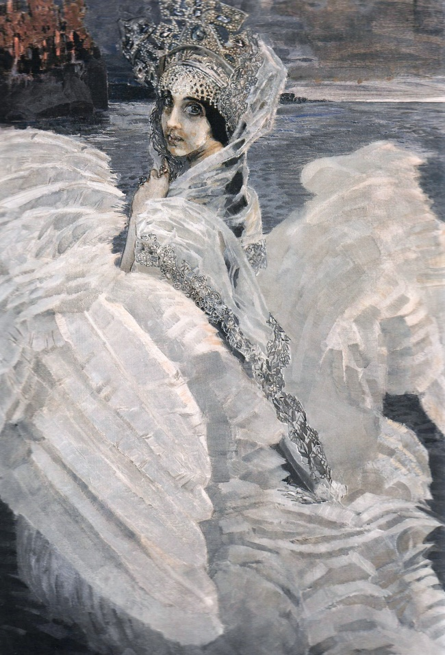
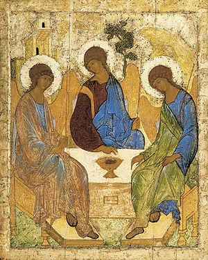
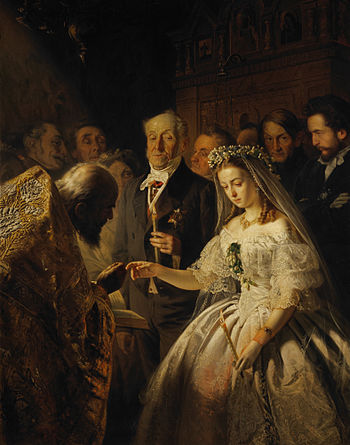
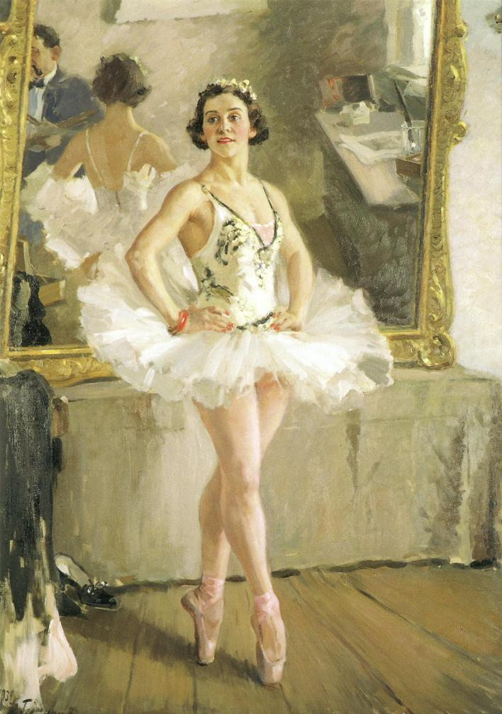
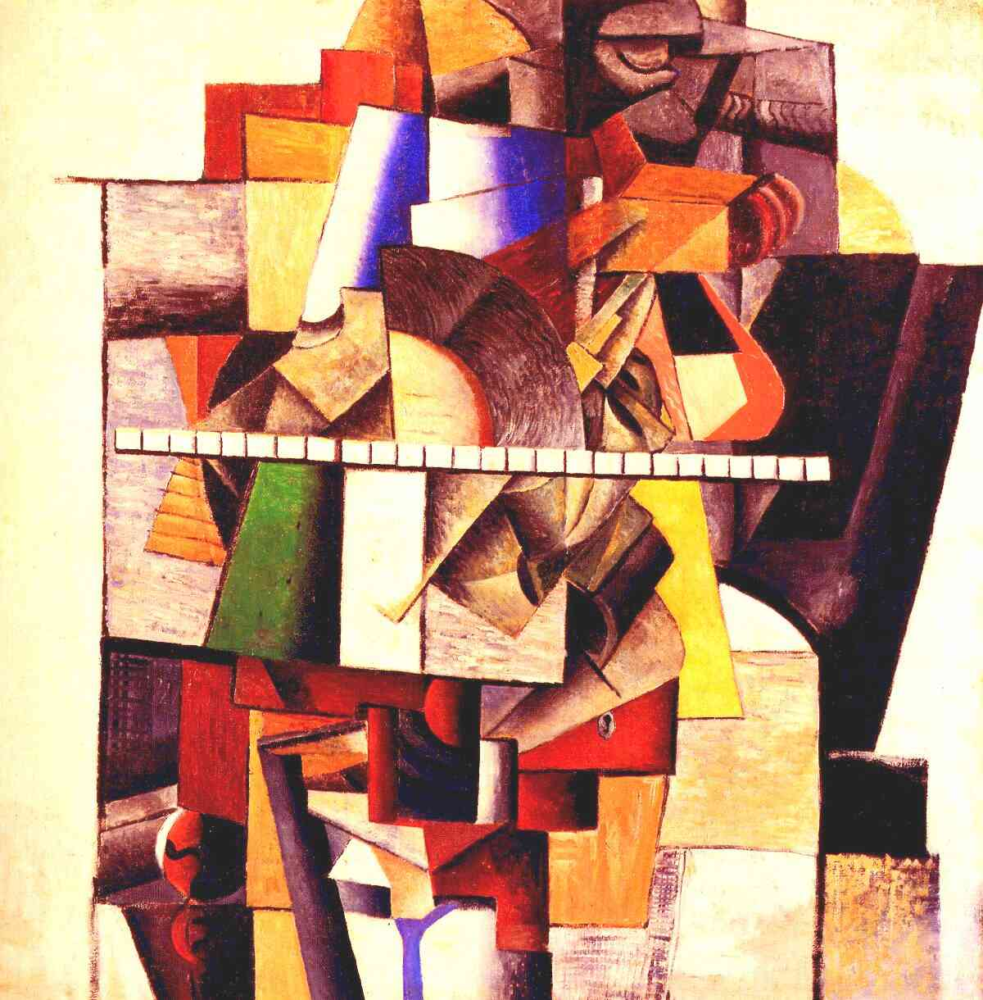
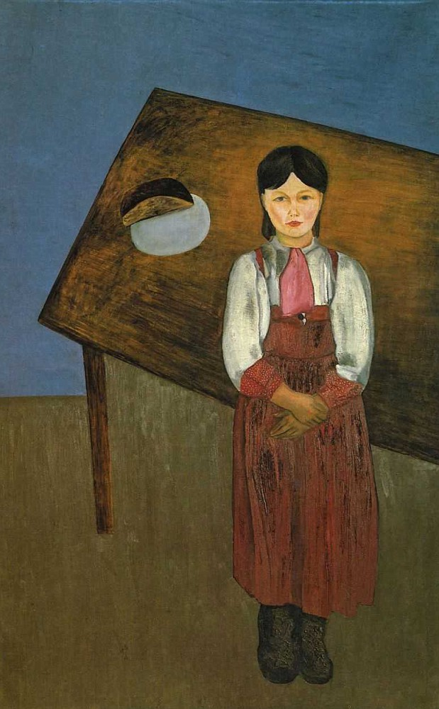
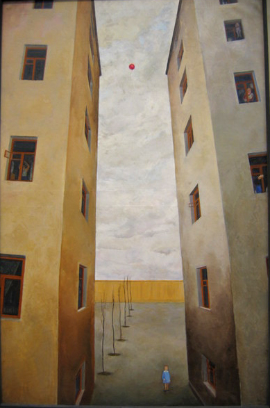
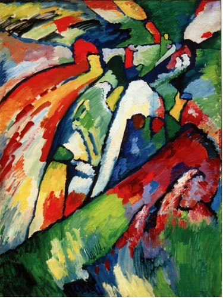
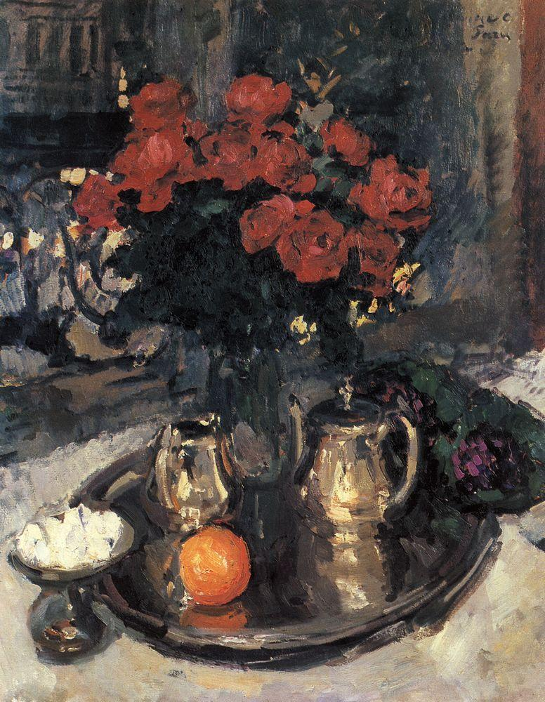
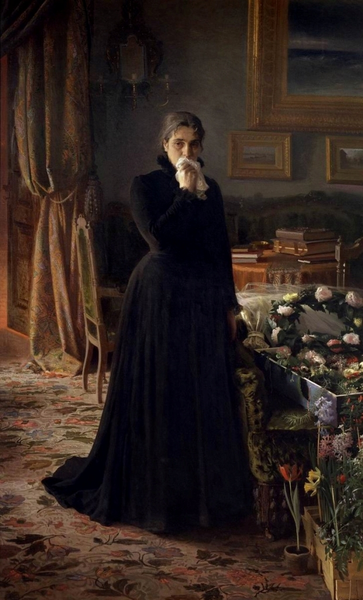

«Царевна-Лебедь» Михаил Врубель

«Троица» Андрей Рублев

«Неравный брак» Василий Пукирев

«Портрет балерины» Александр Герасимов

«Портрет художника М. В. Матюшина» Казимир Малевич

«Аниська» Давид Штеренберг

«Шар улетел» Сергей Лучишкин

«Импровизация 7» Василий Кандинский

«Розы и фиалки» Константин Коровин

«Неутешное горе» Иван Крамской